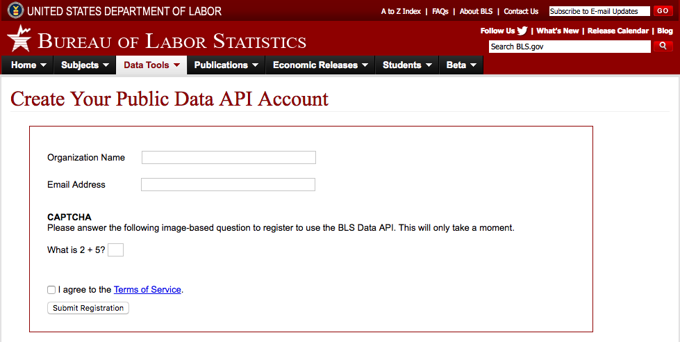
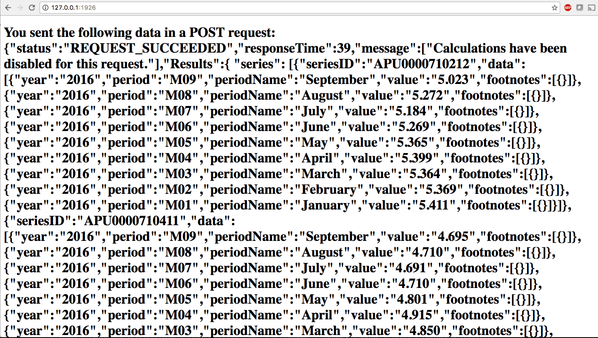

But, first, you'll need to obtain an API key, which is easy-peasy. You will need to visit register at http://data.bls.gov/registrationEngine/
A few advantages of having an API key are
The coding, however, need to change in order to accomdate the multiple series. In addition, the example below, we will be quering for years 2010 to 2016. Note: Without an API key, the default for data pull is for 3 years timeframe. If you replace the app.get with the one below you can run data for 2 series.
app.get('/',function(req,res){
var context = {};
request({
"url":"http://api.bls.gov/publicAPI/v2/timeseries/data/",
"method":"POST",
"headers":{
"Content-Type":"application/json"
},
body: '{"seriesid":["APU0000710212", "APU0000710411"], "startyear":"2016", "endyear":"2016", "period" = "M09", "calculations": true}'}, handlePost)
function handlePost(err, response, body){
if(!err && response.statusCode < 400){
context.bls = body;
res.render('post', context);
console.log(body);
} else {
console.log(err);
console.log(response.statusCode);
}
}
});
You will notice that this request is much more complicated than for the single series. The url, method, header, and body information can be traced to the screenshot below, which can be found on the BLS website
Our self-constructed handlePost function is essentially saying that if there aren't any errors and the reponse of the Status Code is less than 400, then the context.bls = body. Then, we will display on to our post handlebar.
Here is the code for our Post
<h1>You sent the following data in a POST request: {{bls}}</h1>
This is the response that we will receive via our webpage. I tweaked this a little bit just to show 2016 so that you can see both APU0000710212(ice cream) and APU0000710411 (cheese). Unfortunately, the data returned will not describe what the series id stand for; therefore, you have to remember what these series id stand for.
 However, you notice that the data basically is just a bunch of gibberish -- it's not easy on the eyes.
Next: Formatting Data